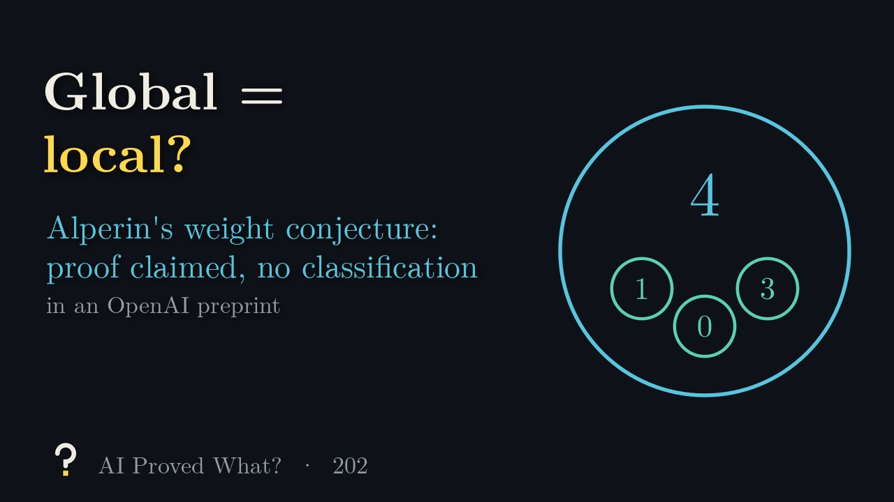

An AI system says Saxl’s conjecture holds: the tensor square of every staircase representation of a symmetric group contains every irreducible, and every symmetric group except three small ones has such a square.
What does that even mean, and has anyone checked? Each episode takes one claim like this, builds the intuition with animation, and keeps a running record of how far the proof has been verified.

Episode 205: Square the staircase: all?, about 4 minutes.
Where this claim stands
- Posted as a preprint
- OpenAI, September 24, 2026
- Peer reviewed
- Not yet
- Checked in Lean
- OpenAI published a Lean proof of the main theorem (scope notes)
Last checked October 17, 2026. The claim has not been withdrawn. Two unrefereed OpenAI preprints (17 and 37 pages); both main statements are formalized in Lean by OpenAI, which we did not rebuild.
Recent episodes
-
Episode 205 · 3:57
Square the staircase: all?
Two preprints claim Saxl’s conjecture, that the square of every staircase representation of a symmetric group contains every irreducible, and its general form for every symmetric group except three small ones, with Lean formalizations of both
-
 Episode 204 · 4:21
Only after stretching?
A preprint claims tensor saturation for every even spin group: if an invariant appears after stretching the labels, it was there all along
Episode 204 · 4:21
Only after stretching?
A preprint claims tensor saturation for every even spin group: if an invariant appears after stretching the labels, it was there all along
-
 Episode 203 · 4:38
Fix the defect group: finite?
Two preprints claim Donovan’s conjecture in full: with the defect group fixed, blocks of all finite groups fall into finitely many Morita classes, over algebraically closed fields and over p-adic rings
Episode 203 · 4:38
Fix the defect group: finite?
Two preprints claim Donovan’s conjecture in full: with the defect group fixed, blocks of all finite groups fall into finitely many Morita classes, over algebraically closed fields and over p-adic rings
-

Episode 202 · 5:06 Global = local? A preprint claims the numerical blockwise Alperin weight conjecture for every finite group and every prime, without using the classification of finite simple groups -
 Episode 201 · 5:13
Every element tame, yet infinite?
A preprint claims a division ring in which every element satisfies a polynomial over the center, yet two elements generate an infinite-dimensional ring, answering Kurosh’s 1941 question negatively
Episode 201 · 5:13
Every element tame, yet infinite?
A preprint claims a division ring in which every element satisfies a polynomial over the center, yet two elements generate an infinite-dimensional ring, answering Kurosh’s 1941 question negatively
-
 Episode 200 · 5:52
Count like monomials?
Two preprints claim proofs of the Eisenbud–Green–Harris and lex-plus-powers conjectures in characteristic zero, by rewriting the variables with coefficients in a division algebra
Episode 200 · 5:52
Count like monomials?
Two preprints claim proofs of the Eisenbud–Green–Harris and lex-plus-powers conjectures in characteristic zero, by rewriting the variables with coefficients in a division algebra
-
 Episode 199 · 6:24
No gluing, not projective?
Two preprints claim a module with no positive self-extensions that is not projective, disproving the Auslander–Reiten conjecture, Tachikawa’s second conjecture and the Nakayama conjecture family over a characteristic-two field
Episode 199 · 6:24
No gluing, not projective?
Two preprints claim a module with no positive self-extensions that is not projective, disproving the Auslander–Reiten conjecture, Tachikawa’s second conjecture and the Nakayama conjecture family over a characteristic-two field
-
 Episode 198 · 6:10
No ceiling?
A preprint claims one finite-dimensional complex algebra whose finite projective resolutions have no bound on their length, disproving the little finitistic-dimension conjecture
Episode 198 · 6:10
No ceiling?
A preprint claims one finite-dimensional complex algebra whose finite projective resolutions have no bound on their length, disproving the little finitistic-dimension conjecture
Browse by subject
- Number theory31 of 31 explained
- Algebraic and complex geometry36 of 36 explained
- Real and complex analysis16 of 16 explained
- Convex and metric geometry15 of 15 explained
- Theoretical computer science40 of 40 explained
- Dynamical systems and ergodic theory12 of 12 explained
- Combinatorics37 of 37 explained
- Algebra13 of 18 explained
- Probability and statistical mechanics0 of 29 explained
- Mathematical logic0 of 6 explained
- Group theory0 of 14 explained
- Mathematical physics0 of 25 explained
- Operator algebras0 of 19 explained
- Topology0 of 18 explained
- Functional analysis0 of 11 explained
- Differential geometry0 of 29 explained
- Partial differential equations0 of 16 explained
Progress
- Explained
- 200 of 372 results (719 papers in all)
- Lean proof published by OpenAI
- 242 of 372 results: 177 of the main theorem, 65 of part of the claim
- Peer reviewed
- 0 as of October 17, 2026
OpenAI’s 719 papers are grouped into 372 results. A result is one main claim plus any companion papers, such as alternative proofs, supporting results or consequences, and each episode explains one whole result, all of its papers included.
How to read the record
Every claim gets the same three steps. A filled gold box means a step has happened; an empty box means it hasn’t yet.
- Posted as a preprint
- The proof is public
- Peer reviewed
- Refereed by mathematicians
- Checked in Lean
- Verified step by step by computer
Posted as a preprint means the lab has released a written proof anyone can read. That’s where a claim starts, not where it ends. Peer reviewed means independent mathematicians have refereed it, usually for a journal. Checked in Lean means the main result has been verified by Lean, a computer program that accepts a proof only when every step is justified.
When OpenAI’s published Lean proof covers only part of a claim, the box stays empty and the record says so. In lists, a half-filled box marks these.
If a claim is withdrawn, its box turns red and the episode stays up, clearly marked. Mistakes are part of the story.